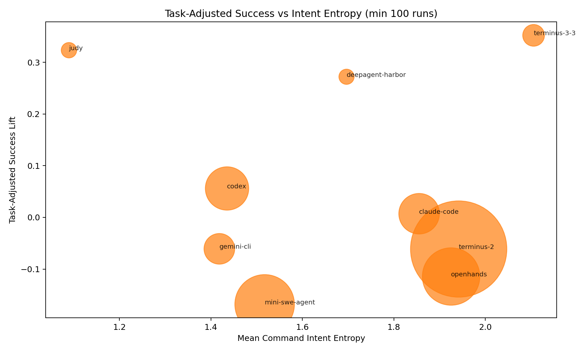
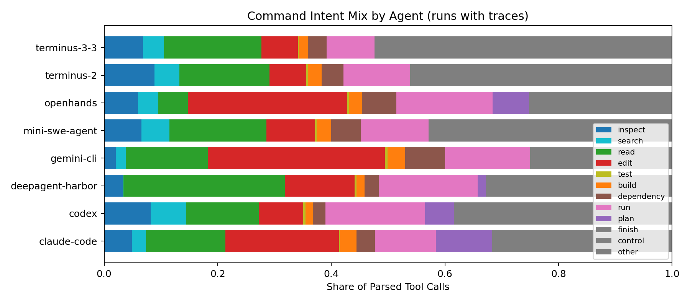

terminus-3-3
74.9% success / +0.352 lift
A process dashboard for coding agents: not just whether they solve Terminal-Bench tasks, but how each model-harness tuple moves through the terminal world.
The strongest evidence is same-task contrast: agents can have nearly identical outcomes while differing by 100+ tool calls and sharply different action rhythms.
Task-adjusted success, process volume, failure rate, and command-intent diversity summarized by traced agent.
74.9% success / +0.352 lift
71.9% success / +0.323 lift
67.7% success / +0.272 lift
45.2% success / +0.056 lift
40.3% success / +0.007 lift
33.5% success / -0.061 lift
33.6% success / -0.061 lift
28.1% success / -0.114 lift
22.8% success / -0.168 lift
Same task, similar local outcome, divergent process vector.
| task_name | agent_a | agent_b | success_gap | tool_call_gap | process_gap_score |
|---|---|---|---|---|---|
| schemelike-metacircular-eval | gemini-cli | openhands | 0.100 | 159.8 | 184.2 |
| winning-avg-corewars | gemini-cli | terminus-2 | 0.050 | 134.8 | 162.4 |
| make-doom-for-mips | deepagent-harbor | openhands | 0.000 | 149.0 | 159.1 |
| make-doom-for-mips | codex | openhands | 0.000 | 137.4 | 159.0 |
| make-doom-for-mips | gemini-cli | openhands | 0.000 | 139.6 | 154.8 |
| train-fasttext | gemini-cli | terminus-3-3 | 0.100 | 127.5 | 153.7 |
| train-fasttext | codex | terminus-3-3 | 0.100 | 123.1 | 147.5 |
| path-tracing | gemini-cli | openhands | 0.093 | 107.3 | 141.9 |
| tune-mjcf | mini-swe-agent | openhands | 0.068 | 117.0 | 141.5 |
| train-fasttext | claude-code | terminus-3-3 | 0.100 | 109.9 | 139.6 |
| build-cython-ext | mini-swe-agent | openhands | 0.080 | 119.3 | 139.3 |
| schemelike-metacircular-eval | mini-swe-agent | openhands | 0.080 | 118.2 | 138.4 |
| crack-7z-hash | gemini-cli | openhands | 0.041 | 119.3 | 138.0 |
| make-doom-for-mips | judy | openhands | 0.000 | 129.6 | 134.1 |
| make-doom-for-mips | mini-swe-agent | openhands | 0.000 | 113.0 | 134.0 |
| winning-avg-corewars | mini-swe-agent | openhands | 0.087 | 108.0 | 131.9 |
Holding the model fixed still leaves large process differences.
| model | agent_a | agent_b | success_gap | tool_call_gap | process_gap_score |
|---|---|---|---|---|---|
| gpt-5-nano@openai | mini-swe-agent | terminus-2 | 0.011 | 104.2 | 116.9 |
| gpt-5-nano@openai | codex | terminus-2 | 0.036 | 104.7 | 115.5 |
| gemini-2.5-flash@gemini | gemini-cli | openhands | 0.009 | 65.7 | 83.3 |
| claude-sonnet-4-5-20250929@anthropic | claude-code | openhands | 0.029 | 63.1 | 79.7 |
| claude-sonnet-4-5-20250929@anthropic | mini-swe-agent | openhands | 0.001 | 52.9 | 73.6 |
| gemini-2.5-flash@gemini | gemini-cli | terminus-2 | 0.016 | 60.9 | 73.5 |
| claude-opus-4-1-20250805@anthropic | mini-swe-agent | openhands | 0.017 | 49.8 | 71.4 |
| Qwen/Qwen3-Coder-480B-A35B-Instruct-FP8@together_ai | openhands | terminus-2 | 0.016 | 55.4 | 70.7 |
| moonshotai/Kimi-K2-Instruct-0905@together_ai | openhands | terminus-2 | 0.007 | 53.9 | 70.6 |
| gemini-2.5-pro@gemini | gemini-cli | openhands | 0.033 | 51.0 | 69.9 |
| gpt-5-nano@openai | mini-swe-agent | openhands | 0.029 | 52.5 | 67.8 |
| gpt-5-nano@openai | codex | openhands | 0.017 | 53.0 | 66.3 |
| claude-sonnet-4-5-20250929@anthropic | openhands | terminus-2 | 0.007 | 48.9 | 65.2 |
| claude-opus-4-1-20250805@anthropic | claude-code | openhands | 0.021 | 47.8 | 64.2 |
Charts generated from the public trace corpus and refreshed with the CSV artifacts.




| agent | mean_task_centered_success | mean_task_centered_tool_call_count | mean_task_centered_command_intent_entropy | mean_task_centered_failure_rate | mean_task_centered_duration_seconds |
|---|---|---|---|---|---|
| terminus-3-3 | 0.420 | 3.3 | 0.289 | -0.044 | -16.4 |
| judy | 0.405 | 5.9 | -0.715 | -0.041 | 149.3 |
| deepagent-harbor | 0.357 | -14.4 | -0.140 | -0.002 | 72.3 |
| claude-code | 0.114 | -7.5 | 0.042 | -0.014 | -131.0 |
| codex | 0.019 | -26.0 | -0.380 | 0.018 | -300.2 |
| terminus-2 | 0.003 | 2.4 | 0.125 | -0.011 | 58.6 |
| openhands | -0.032 | 29.0 | 0.111 | -0.037 | 197.1 |
| mini-swe-agent | -0.087 | -21.1 | -0.302 | 0.039 | -197.7 |
| gemini-cli | -0.125 | -24.8 | -0.400 | 0.242 | -169.2 |
| feature | raw_success_corr | task_centered_success_corr | feature_mean |
|---|---|---|---|
| command_intent_entropy | 0.142 | 0.198 | 1.8 |
| post_failure_intent_entropy | 0.085 | 0.141 | 1.8 |
| tool_category_entropy | 0.149 | 0.135 | 0.519 |
| category_switch_rate | 0.064 | 0.062 | 0.145 |
| intent_switch_rate | -0.001 | 0.037 | 0.577 |
| inspect_intent_calls | -0.057 | -0.012 | 3.1 |
| read_intent_calls | -0.052 | -0.013 | 5.3 |
| test_intent_calls | -0.006 | -0.015 | 0.117 |
| dependency_intent_calls | -0.043 | -0.029 | 1.9 |
| search_intent_calls | -0.066 | -0.030 | 1.7 |
| build_intent_calls | -0.066 | -0.035 | 0.988 |
| repeated_tool_command_rate | -0.055 | -0.036 | 0.269 |
| input_tokens | -0.086 | -0.046 | 920,968.7 |
| edit_intent_calls | -0.070 | -0.046 | 5.9 |
| run_intent_calls | -0.094 | -0.050 | 5.5 |
| cost_cents | -0.094 | -0.053 | 60.9 |
| tool_call_count | -0.110 | -0.059 | 41.6 |
| step_count | -0.081 | -0.061 | 47.1 |
| post_failure_tool_calls | -0.116 | -0.064 | 25.1 |
| failed_tool_call_count | -0.079 | -0.065 | 3.6 |
| failure_rate | -0.082 | -0.091 | 0.098 |
| duration_seconds | -0.197 | -0.094 | 684.5 |
| intent | count | share |
|---|---|---|
| other | 492,521 | 0.344 |
| edit | 204,130 | 0.142 |
| run | 190,330 | 0.133 |
| read | 181,661 | 0.127 |
| inspect | 105,335 | 0.073 |
| dependency | 65,557 | 0.046 |
| search | 57,902 | 0.040 |
| finish | 42,026 | 0.029 |
| plan | 37,888 | 0.026 |
| build | 34,054 | 0.024 |
| control | 17,710 | 0.012 |
| test | 4,048 | 0.003 |
| agent | runs | success_rate | task_adjusted_success_lift | trace_coverage | mean_tool_call_count | mean_command_intent_entropy | mean_failure_rate |
|---|---|---|---|---|---|---|---|
| terminus-2 | 17,431 | 0.336 | -0.061 | 0.914 | 40.2 | 1.9 | 0.087 |
| mini-swe-agent | 6,663 | 0.228 | -0.168 | 0.975 | 20.2 | 1.5 | 0.136 |
| openhands | 6,198 | 0.281 | -0.114 | 0.977 | 69.1 | 1.9 | 0.061 |
| codex | 3,532 | 0.452 | 0.056 | 0.399 | 6.0 | 1.4 | 0.115 |
| claude-code | 3,092 | 0.403 | 0.007 | 0.816 | 27.9 | 1.9 | 0.083 |
| Factory Droid | 2,224 | 0.673 | 0.277 | 0.000 | 0.000 | ||
| gemini-cli | 1,766 | 0.335 | -0.061 | 0.446 | 7.3 | 1.4 | 0.339 |
| letta-code | 1,335 | 0.562 | 0.166 | 0.000 | 0.000 | ||
| goose | 1,332 | 0.442 | 0.047 | 0.000 | 0.000 | ||
| mux | 1,068 | 0.662 | 0.266 | 0.000 | 0.000 | ||
| ruley | 890 | 0.663 | 0.267 | 0.000 | 0.000 | ||
| terminus-3-3 | 887 | 0.749 | 0.352 | 0.764 | 34.1 | 2.1 | 0.055 |
| forge | 445 | 0.784 | 0.388 | 0.000 | 0.000 | ||
| judy | 445 | 0.719 | 0.323 | 0.353 | 15.8 | 1.1 | 0.054 |
| sage | 445 | 0.652 | 0.256 | 0.000 | 0.000 | ||
| Junie | 445 | 0.643 | 0.247 | 0.000 | 0.000 | ||
| ii-agent-simple | 445 | 0.618 | 0.222 | 0.000 | 0.000 | ||
| TerminalBenchAgent | 445 | 0.465 | 0.069 | 0.000 | 0.000 | ||
| spoox-m | 445 | 0.348 | -0.047 | 0.000 | 0.000 | ||
| ante | 444 | 0.649 | 0.252 | 0.000 | 0.000 | ||
| simple_codex | 443 | 0.749 | 0.353 | 0.000 | 0.000 | ||
| aone-agent | 442 | 0.274 | -0.125 | 0.000 | 0.000 | ||
| deepagent-harbor | 433 | 0.677 | 0.272 | 0.963 | 26.4 | 1.7 | 0.094 |
| claude-code-enhanced | 398 | 0.661 | 0.271 | 0.000 | 0.000 | ||
| final | 322 | 0.233 | -0.146 | 0.000 | 0.000 | ||
| opencode | 89 | 0.517 | 0.121 | 0.000 | 0.000 |
| agent | model | runs | success_rate | trace_coverage | mean_tool_call_count | mean_category_switch_rate |
|---|---|---|---|---|---|---|
| forge | gemini-3.1-pro-preview@Google | 445 | 0.784 | 0.000 | 0.000 | |
| Factory Droid | gpt-5.3-codex@openai | 445 | 0.773 | 0.000 | 0.000 | |
| simple_codex | gpt-5.3-codex@openai | 443 | 0.749 | 0.000 | 0.000 | |
| terminus-3-3 | claude-opus-4-6@anthropic | 442 | 0.749 | 0.559 | 28.6 | 0.143 |
| terminus-3-3 | gemini-3.1-pro-preview@Google | 445 | 0.748 | 0.969 | 39.5 | 0.082 |
| judy | claude-opus-4.6@anthropic | 445 | 0.719 | 0.353 | 15.8 | 0.370 |
| ruley | gpt-5.3-codex@OpenAI | 445 | 0.703 | 0.000 | 0.000 | |
| Factory Droid | claude-opus-4-6@anthropic | 445 | 0.699 | 0.000 | 0.000 | |
| mux | gpt-5.3-codex@openai | 445 | 0.685 | 0.000 | 0.000 | |
| deepagent-harbor | gpt-5.2-codex@openai | 433 | 0.677 | 0.963 | 26.4 | 0.398 |
| mux | claude-opus-4-6@anthropic | 445 | 0.665 | 0.000 | 0.000 | |
| claude-code-enhanced | claude-opus-4-6@anthropic | 398 | 0.661 | 0.000 | 0.000 | |
| sage | gemini-3-pro-preview@Google | 445 | 0.652 | 0.000 | 0.000 | |
| Factory Droid | gpt-5.2@openai | 444 | 0.651 | 0.000 | 0.000 | |
| ante | gemini-3-pro-preview@Google | 444 | 0.649 | 0.000 | 0.000 | |
| terminus-2 | gpt-5.3-codex@openai | 445 | 0.647 | 0.000 | 0.000 | |
| Junie | gemini-3-flash-preview@gemini | 445 | 0.643 | 0.000 | 0.000 | |
| Factory Droid | claude-opus-4-5-20251101@anthropic | 445 | 0.631 | 0.000 | 0.000 | |
| codex | gpt-5.2@openai | 445 | 0.629 | 0.000 | 0.000 | |
| terminus-2 | claude-opus-4-6@anthropic | 445 | 0.629 | 1.000 | 31.3 | 0.076 |
| ruley | gemini-3-pro-preview@Google | 445 | 0.623 | 0.000 | 0.000 | |
| ii-agent-simple | gemini-3-pro-preview@gemini | 445 | 0.618 | 0.000 | 0.000 | |
| Factory Droid | gemini-3-pro-preview@google | 445 | 0.611 | 0.000 | 0.000 | |
| mux | gpt-5.2@openai | 89 | 0.607 | 0.000 | 0.000 | |
| codex | gpt-5.1-codex-max@openai | 445 | 0.605 | 0.000 | 0.000 | |
| letta-code | claude-opus-4-5@anthropic | 445 | 0.591 | 0.000 | 0.000 | |
| mux | claude-opus-4-5@anthropic | 89 | 0.584 | 0.000 | 0.000 | |
| claude-code | claude-opus-4-6@anthropic | 445 | 0.580 | 0.978 | 27.3 | 0.511 |
| codex | gpt-5.1-codex@openai | 445 | 0.578 | 0.000 | 0.000 | |
| terminus-2 | claude-opus-4-5-20251101@anthropic | 445 | 0.578 | 1.000 | 44.6 | 0.082 |
| terminus-2 | gemini-3-pro-preview@gemini | 445 | 0.569 | 1.000 | 30.2 | 0.094 |
| letta-code | gemini-3-pro-preview@google | 445 | 0.560 | 0.000 | 0.000 | |
| goose | claude-opus-4-5@anthropic | 442 | 0.541 | 0.000 | 0.000 | |
| terminus-2 | gpt-5.2@openai | 444 | 0.540 | 0.998 | 47.6 | 0.071 |
| letta-code | gpt-5.1-codex@openai | 445 | 0.535 | 0.000 | 0.000 | |
| terminus-2 | glm-5@z-ai | 442 | 0.523 | 0.851 | 34.7 | 0.054 |
| claude-code | claude-opus-4-5-20251101@anthropic | 445 | 0.521 | 0.980 | 36.9 | 0.489 |
| openhands | claude-opus-4-5-20251101@anthropic | 445 | 0.519 | 0.984 | 37.9 | 0.463 |
| terminus-2 | gemini-3-flash-preview@gemini | 445 | 0.517 | 0.998 | 34.8 | 0.122 |
| opencode | claude-opus-4-5@anthropic | 89 | 0.517 | 0.000 | 0.000 |
| task_name | runs | success_rate | trace_coverage | mean_tool_call_count |
|---|---|---|---|---|
| make-doom-for-mips | 588 | 0.000 | 0.663 | 56.0 |
| filter-js-from-html | 585 | 0.005 | 0.672 | 15.5 |
| raman-fitting | 583 | 0.015 | 0.674 | 14.9 |
| gpt2-codegolf | 583 | 0.017 | 0.688 | 17.4 |
| sam-cell-seg | 583 | 0.017 | 0.662 | 31.4 |
| install-windows-3.11 | 586 | 0.022 | 0.662 | 41.3 |
| extract-moves-from-video | 586 | 0.024 | 0.647 | 34.2 |
| caffe-cifar-10 | 584 | 0.024 | 0.671 | 28.9 |
| train-fasttext | 581 | 0.026 | 0.649 | 45.5 |
| video-processing | 588 | 0.048 | 0.651 | 15.4 |
| mteb-retrieve | 582 | 0.058 | 0.682 | 10.0 |
| dna-insert | 591 | 0.064 | 0.668 | 20.7 |
| torch-pipeline-parallelism | 586 | 0.067 | 0.643 | 11.0 |
| gcode-to-text | 584 | 0.070 | 0.673 | 14.6 |
| dna-assembly | 595 | 0.074 | 0.664 | 21.6 |
| make-mips-interpreter | 575 | 0.076 | 0.636 | 48.6 |
| mteb-leaderboard | 580 | 0.078 | 0.669 | 31.5 |
| regex-chess | 580 | 0.081 | 0.631 | 33.1 |
| torch-tensor-parallelism | 586 | 0.089 | 0.648 | 10.5 |
| db-wal-recovery | 591 | 0.091 | 0.675 | 34.6 |
| model-extraction-relu-logits | 586 | 0.131 | 0.671 | 12.8 |
| polyglot-rust-c | 579 | 0.140 | 0.629 | 28.3 |
| polyglot-c-py | 582 | 0.143 | 0.644 | 21.5 |
| chess-best-move | 591 | 0.147 | 0.672 | 17.0 |
| path-tracing-reverse | 579 | 0.161 | 0.627 | 47.9 |
| path-tracing | 576 | 0.175 | 0.628 | 42.8 |
| protein-assembly | 586 | 0.188 | 0.638 | 22.6 |
| write-compressor | 584 | 0.194 | 0.647 | 26.6 |
| financial-document-processor | 587 | 0.254 | 0.671 | 27.5 |
| break-filter-js-from-html | 588 | 0.272 | 0.668 | 38.9 |
| circuit-fibsqrt | 576 | 0.273 | 0.679 | 56.3 |
| schemelike-metacircular-eval | 587 | 0.274 | 0.639 | 68.3 |
| qemu-alpine-ssh | 586 | 0.278 | 0.620 | 30.3 |
| sanitize-git-repo | 587 | 0.290 | 0.666 | 25.8 |
| winning-avg-corewars | 587 | 0.300 | 0.659 | 89.6 |
| adaptive-rejection-sampler | 585 | 0.311 | 0.665 | 20.9 |
| feal-linear-cryptanalysis | 580 | 0.322 | 0.679 | 33.1 |
| overfull-hbox | 582 | 0.335 | 0.649 | 30.4 |
| feal-differential-cryptanalysis | 585 | 0.344 | 0.670 | 24.4 |
| query-optimize | 584 | 0.346 | 0.669 | 14.2 |